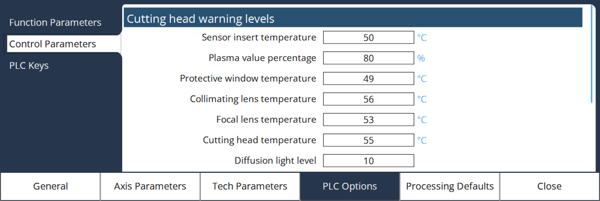
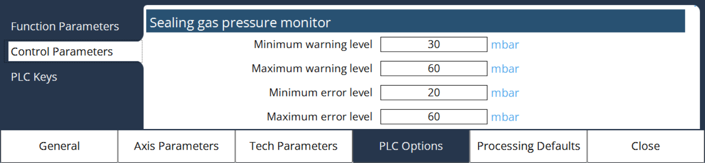

Control Parameters
Maximum override adjust level
By adjusting the maximum override value in percentage, it will change in speed override option. Default maximum value is 120 %.
Height control 2 steps only for piercing
In PLC Options, select Control Parameters to configure the minimum height to be used for HC 2 steps.
Auto lubrication cycle
In PLC Options, select Control Parameters to configure the delay time of Auto lubrication cycle.
Number of lubrication valves: It can be set to either 0 or 1.
-
When set to 0: The cycle begins with X and Y axes moving simultaneously toward their positive and negative limits.
-
The lubrication ON/OFF cycle runs based on delay settings.
-
The direction valve stays OFF throughout the process.
-
-
When set to 1: The lubrication cycle is executed sequentially for each axis:
-
X-axis moves first from its starting point to the positive limit (e.g., 0 to 3000). Once it reaches the limit, it returns to 50% of the limit (e.g., 1500). During this movement, the lubrication direction valve remains OFF.
-
After the X-axis completes its cycle, the Y-axis begins. It moves from 0 to its positive limit (e.g., 1500) and then returns to 50% of the limit (e.g., 750). During this phase, the lubrication direction valve is turned ON.
-
X-Axis lubrication feed rate: This parameter defines the travel speed of the X-axis during the lubrication cycle.
Y-Axis lubrication feed rate: This parameter defines the travel speed of the Y-axis during the lubrication cycle.
Lubrication ON delay: This parameter defines the time interval of the lubrication ON/OFF cycle. It also defines the duration for which lubrication remains OFF before the next ON cycle begins.
Laser device configuration
Minimum beam on/off time: This parameter is primarily used in the Nano-Joint Cutting function. It defines a threshold time for beam on/off control during nano-joint operations.
-
If the calculated Beam On/Off time is greater than the set threshold, the laser frequency remains unchanged.
-
If the calculated Beam On/Off time is less than the threshold value, the frequency is automatically adjusted by the PLC to ensure optimal nano-joint performance.
| The minimum allowable value for this parameter is 50 microseconds. |
AWS control delay time: This parameter is used to introduce a delay before outputting the PWM signal via Ether CAT. It is specifically applicable when the laser is operating in Fieldbus mode and cutting is controlled through AWS Control.
The delay helps ensure proper synchronization between the control system and the laser output during cutting operations.
Adjust gas pressure online
In PLC options, configure the amount of maximum gas pressure adjust and step value for adjust. By using '+' & '-' buttons can control the pressure during program running.
This feature allows real-time adjustment of gas pressure during laser cutting, Only for DIN format operations. Two parameters are used for configuration:
Maximum gas pressure adjust: Sets the upper limit for gas pressure adjustment. The range is 0 to 4 bar.
Gas pressure adjust steps: Defines the incremental steps to reach the desired pressure.
-
For example: If the Maximum Gas Pressure Adjust is set to 3 bar and the Number of Steps is set to 5, the system calculates the step size as: Step Size = Maximum Gas Pressure / Number of Steps = 3 bar / 5 = 0.6 bar
-
Starting from the normal gas pressure already defined, the pressure increases by 0.6 bar per step until it reaches the total of normal pressure + 3 bar. *The range is 0 to 20 steps.
This setup ensures smooth and controlled pressure adjustments during cutting operations. Gas pressure adjustment is only available while the program is running.
Height sensor calibration program
In current implementation of Height sensor calibration program, the head will move to 50 % of total stroke at high speed and then reduce to 30mm/min speed to go to touch the plate and start the calibration. In some machine the 50% stroke looks to be very big and take more time to touch the plate. So, user can configure the offset distance from negative limit for slow speed. There are two key configurable parameters in this process:
Offset distance from negative limit for slow speed: It allows the user to define a specific offset distance from the negative limit position, where the cutting head moves in a rapid speed till this position and move towards the sheet in a slow speed.
Tip touch offset value: This offset defines the distance between the nozzle tip and the sheet from where the first calibration point starts. It ensures no error due to frequency variation during calibration.
These parameters allow flexibility to accommodate different machine builds and ensure precise and efficient calibration for optimal cutting performance.
Edge detection program
User can configure the Slat start point and its distance from peak to peak of X and Y axis located in the machine to detect the edges of the sheet in order to avoid collision.
Slat start point along X-axis: This parameter defines the starting position of the slat table along the X-axis. By default, the start point is set to 0 mm, which means the machine considers this position as the origin for X-axis operations.
Slat start point along Y-axis: This parameter specifies the initial position of the slat table along the Y-axis. By default, the start point is set to 0 mm, indicating that this location is recognized as the origin for Y-axis movement.
The below diagram illustrates the spacing between the slats and the support pins on the pallet.
Slats equal distance along X-axis: This parameter indicates the uniform spacing between each slat along the X-axis. For this specific pallet, the distance between slats is predefined as 70 mm.
Slats equal distance along Y-axis: This parameter specifies the uniform distance between each support pin along the Y-axis. For this pallet configuration, the peak-to-peak distance between support pins is a predefined value of 15 mm.
Edge correction along X-axis: This parameter allows for correcting the edge detection reference along the X-axis. After edge detection process, the correction offset set in this parameter is applied to X-axis.
Edge correction along Y-axis: This parameter allows for correcting the edge detection reference along the Y-axis. After edge detection process, the correction offset set in this parameter is applied to Y-axis.
Speed to detect the sheet edge: The speed used to detect the sheet edge during the edge detection process the axis will move with the speed set in this parameter. This predefined speed ensures accurate and reliable detection of the sheet edge.
Sheet stop position: The sheet stop for raw material stacking in the machine layout can be configured in different corner positions.
The diagram above illustrates the four possible Sheet Stop Positions:
-
Position 1 - Bottom-right corner
-
Position 2 - Bottom-left corner
-
Position 3 - Top-left corner
-
Position 4 - Top-right corner
The automation device is configured to align with the predefined sheet stop corner, which directly influences the sheet loading position within the machine. The sheet stop positions are predefined for these configurations.
Start height sensor calibration before edge detect: Enables the system to perform height sensor calibration automatically before initiating the edge detection process.
Acknowledge the sheet origin point: It is used to confirm and record the sheet’s origin position in the machine before actual cutting process will start.
Use pilot diode for start position: Enables the use of the pilot diode to accurately identify the starting position before edge detection begins.
Sheet stopper specification

User can configure the number of stoppers and distance from one to other stopper with its length and width of X and Y axis installed in the machine to avoid the collision. It helps especially while running edge detection program.
Number of stoppers along X-axis: Specifies the total number of stoppers positioned along the X-axis.
Number of stoppers along Y-axis: Specifies the total number of stoppers positioned along the Y-axis.
Stopper length along X-axis: Defines the physical length of each stopper in the direction of the X-axis.
Stopper width along Y-axis: Defines the physical width of each stopper in the direction of the Y-axis.
Distance of first stopper from origin along X-axis: Indicates how far the first stopper is located from the origin (0,0) along the X-axis.
Distance between first and second stopper along X-axis: Specifies the spacing between the first and second stopper in the X-axis direction.
Distance between second and third stopper along X-axis: Specifies the spacing between the second and third stopper in the X-axis direction.
Distance of first stopper from origin along Y-axis: Indicates how far the first stopper is located from the origin (0,0) along the Y-axis.
Distance between first and second stopper along Y-axis: Specifies the spacing between the first and second stopper in the Y-axis direction.
Distance between second and third stopper along Y-axis: Specifies the spacing between the second and third stopper in the Y-axis direction.
Suction anti blow valves configuration
Number of anti blow valves: The machine is equipped with four anti-blow valves.
Anti blow valve ON time: Each anti-blow valve remains activated for 0.2 seconds during operation.
Anti-Blow valve wait time: A wait time of 20 seconds is applied between successive activations of the anti-blow valves to ensure proper functioning.
Offline anti blow lag time: This parameter enables the Anti Blow valve to be on even after the exhaust system is off
Filter sensor: A temperature detection sensor is integrated into the suction filter system of the L99 laser to monitor filter safety and prevent potential fire hazards.
-
When the filter temperature is within a safe range (below 70C), the PLC input signal remains ON (1).
-
If the filter temperature exceeds 70C, indicating a possible overheating or fire risk, the PLC input signal switches OFF (0).
System Response: If the filter temperature feedback signal is OFF, the exhaust motor will automatically shut down to ensure operational safety.
This safety function can be enabled or disabled via the machine parameters.
Gas pressure adjust levels for analogue control
The following parameters are used to control the Set and Actual value of the gas pressure in the Analog control gas pressure regulator. These parameters are mainly used in the machines where Analog pressure regulator is used.
Gas configuration: In some machines, they have low pressure regulator and High-pressure regulator separately. Hence to define which gas is used in Low pressure line and which gas is used in high pressure line, these parameters are used.
HP gas regulator command correction: This parameter is used to define a correction factor for the commanded value for High Pressure regulator.
HP gas regulator feedback correction: This parameter is used to define a correction factor for the feedback value for High Pressure regulator.
LP gas regulator command correction: This parameter is used to define a correction factor for the commanded value for Low Pressure regulator.
LP gas regulator feedback correction: This parameter is used to define a correction factor for the feedback value for Low Pressure regulator.
Calibration: This parameter is used to enable or disable gas pressure calibration. Calibration is required to ensure accurate control and feedback of the pressure value in analogue control pressure regulator.
Calibration Procedure:
-
Select the gas used in the machine from the gas configuration dropdown.
-
Enable the calibration checkbox for the analogue control of pressure valve.
-
Check the values of High Pressure & Low Pressure Valves of the gas in Custom parameter 2 under Tech Parameters → Laser Technology.
-
Go to the Controls Page, select the Gas Purge Program, and check the Calibration box.
This option appears only if Calibration is enabled in the PLC options. -
Once the calibration checkbox is enabled, the table will be displayed as in the below image. Select Manual mode or Auto mode for calibration, Feedback, Number of Points, DA Autofill according to the need.
-
Manual Mode: Press start button for next output.
-
Auto Mode: For defined delay, will output the next value.
-
Feedback: If enabled, the Valve feedback is saved for the monitoring of the gas pressure, else it will save the set value (no monitoring).
-
Number of Points: It defines the number of calibration points to be stored.
-
DA Auto fill: If enabled, it will fill the DA output based on the Number of Points.
-
-
Start the Calibration process by pressing the start button, enter the Gas pressure for each output values.
|
a. Calibration process can be started the from the selected index also. b. The calibration table will be stored for each gas type. c. Max pressure value will be displayed depends on the Gas configuration and Pressure values entered in Custom Parameters 2 under Tech Parameters. |
Pallet changer - up and down motion hydraulic control
For Standard 3 x 1.5 machines, the Up Down motion of hydraulic control in PLC function for Pallet changer works fine. But for the bigger machines, eg: 7 x 3 size, the Up Down motion of Hydraulic control requires some delay time.
During that time, user can configure the delay time of Up solenoid, Down solenoid and Hydraulic motor OFF.
Nozzle cleaning & height sensor calibration offsets
For Nozzle cleaning and height sensor calibration, Earlier the offsets are directly entered in the Work offsets of S50 & S51 respectively. Now by entering these offsets in Control Parameter page, it will update the offsets via the sub-program.
Cutting head warning levels

In PLC options, select Control Parameters to configure the maximum temperature, percentage and level of cutting head warning levels to get the warning display when program is running.
Traverse blow valve configuration
The Traversal Blow Valve is responsible for regulating the air pressure used during the traverse blowing process. This function is controlled by a Pressure Regulator Valve, which can be configured through the Miscellaneous Control Parameters. Two key parameters must be set to ensure correct operation: the control method and the maximum pressure.
Control method: This parameter defines how the pressure regulator valve is controlled:
-
0 - Voltage Control: The valve is driven by a voltage signal.
-
1 - Current Control: The valve is driven by a current signal.
Maximum pressure: This parameter sets the upper limit for the pressure applied during traverse blowing.
These parameters are essential for the safe and efficient operation of the traversal blow system and must be configured appropriately during system setup or maintenance.
Laser pulsing gate (LPG) delay time
The Laser Pulsing Gate (LPG) is primarily used during fly-cutting operations, where the cutting head moves continuously along the traverse path, but the laser pulses are turned on and off without stopping the head movement. This technique is commonly applied for high-speed, repetitive cuts such as perforations or patterns.
The LPG on and off delay parameters define the timing of the LPG signal.
-
LPG On delay: Specifies the delay time before the laser pulse is turned on after the gate signal is activated.
-
LPG Off delay: Specifies the delay time before the laser pulse is turned off after the gate signal is deactivated.
-
MQ search look ahead time: This parameter is for fly cut functions, It helps to avoid the continuous beam ON at higher speed & also small distance.
Sealing gas pressure monitor

This parameter is used for the laser above 3kw.
The Sealing Gas Monitoring function is designed to ensure the safe and reliable operation of the sealing gas system by tracking its pressure levels. The system continuously monitors the sealing gas pressure and provides two levels of alerts:
-
Warning Range - 30 - 60 mbar
-
Error Range - 20 - 60 mbar
Minimum warning level:
This is the lower threshold of the sealing gas pressure that will trigger a
warning if the pressure drops below this value.
Default: 30 mbar
Maximum warning level:
This is the upper threshold of the sealing gas pressure that will trigger a
warning if the pressure rises above this value.
Default: 60 mbar
Minimum error level:
This is the critical low limit of the sealing gas pressure. If the pressure
drops below this value, the system logs it as an error, not just a warning.
Default: 20 mbar
Maximum error level:
This is the critical high limit of the sealing gas pressure. If the pressure
exceeds this value, an error is raised instead of a warning.
Default: 60 mbar
Protective glass monitor
The Protective Glass Monitoring function is designed to detect contamination or damage to the protective glass and ensure safe and efficient laser operation.
Offline broken factor and Online broken factor: This parameters are used to evaluate the protective window condition.
Warning limit: When the glass condition drops below 60%, a warning is generated.
Error limit: If the glass condition falls below 20%, an error is triggered. This may stop the laser process.
Delay time to report warning: The system waits for this duration before confirming and displaying a warning status.
Stop the program, if dirty: A configurable checkbox option allows users to enable automatic program stops when the protective glass is dirty or damaged.